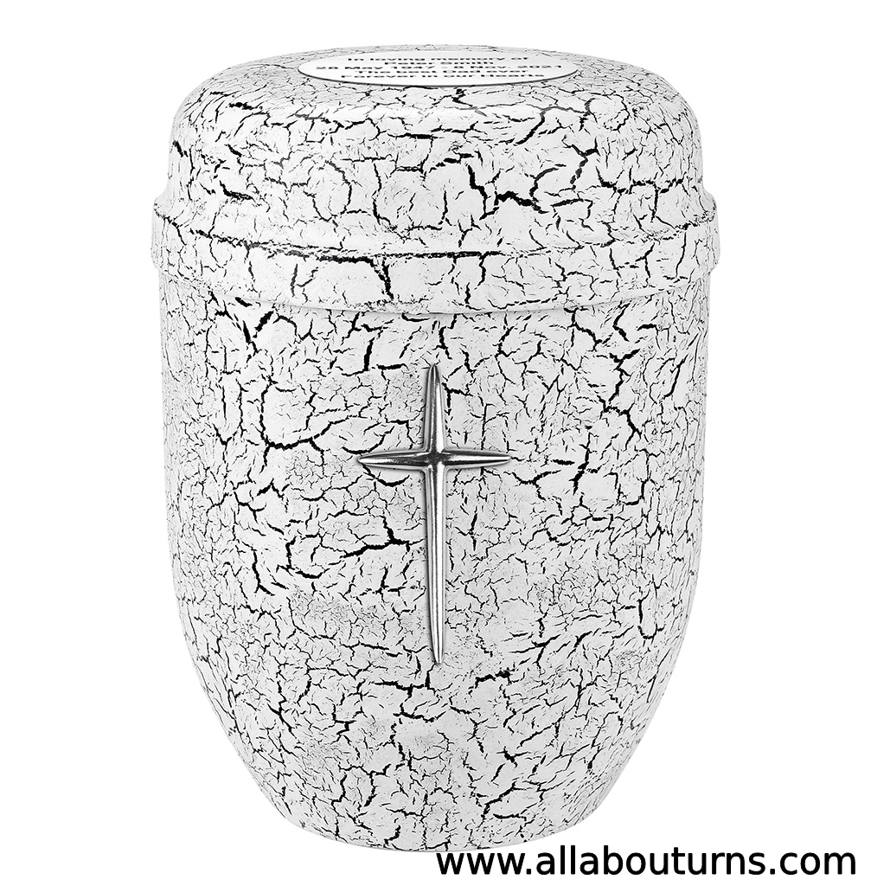

What is a cremation urn?
It is a container adapted to contain the ashes of a deceased person or animal.
Read More >>It is a container adapted to contain the ashes of a deceased person or animal.
Read More >>The urn can practically be made of any material that is suitable for building a stable urn.
Read More >>Much depends on the traditions, customs or religion of a given community. There are several solutions that we can use.
Read More >>The capacity of the urn depends on the weight of the deceased person. The greater the body weight, the larger the urn you need.
Read More >>Keepsake is a small companion urn for a small amount of ashes. It is usually accompanied by another, large urn. Useful for dividing the ashes.
Read More >>Depending on what urn we have. Whether it opens from the bottom or the top. What is it made of, what is its structure and is it possible to put a plastic bag in it.
Read More >>Of course yes, animals as well as humans can be cremated. It is becoming more and more popular.
Read More >>It is a large capacity urn that will accommodate the remains of two adults. The ashes can be mixed or buried separately in one urn.
Read More >>There are plenty of ideas for unusual and original urns. Starting with artistic urns and ending with urns for Star Wars fans.
Read More >>It is a container adapted to contain the ashes of a deceased person or animal. It is made of various materials, depending on where we will store the urn. Such a container should be tightly closed or allow ashes to be placed in a plastic bag.
The urn can practically be made of any material that is suitable for building a stable urn. It is important that the materials are of good quality and suitable for the purpose of the urn. The urn remaining outside must not be made of wood or any other material that is not weatherproof. Most often, urns are built of wood, stone, ceramics or metal.
Much depends on the traditions, customs or religion of a given community. There are several solutions that we can use. Also depending on the law. We can traditionally bury an urn in a grave, there are colombia houses where urns with ashes are stored. It is common practice to keep an urn with ashes in or near the house.
The capacity of the urn depends on the weight of the deceased person. The greater the body weight, the larger the urn you need. The best practice is to use an urn size calculator. By entering the body weight, you can easily calculate what urn you need. It is good practice to clearly have urns with a slightly larger capacity than the calculator indicates.
Keepsake is a small companion urn for a small amount of ashes. It usually accompanies another, large urn. Useful for dividing the ashes. Keepsake is used when ashes are distributed among family members. There are also urns for small animals, for example.
Depending on what urn we have. Whether it opens from the bottom or the top. What is it made of, what is its structure and is it possible to put a plastic bag in it. Make sure that the ashes do not spill out of the urn, that no moisture gets into them, and that it is stored in a safe place. Pouring the ashes into the urn is very easy, just follow the directions.
Of course yes, animals as well as humans can be cremated. It is becoming more and more popular. Animals often become our best friends, so it is only natural that we want to honor his memory. There are also special urns for animals.
It is alarge capacity urn that will accommodate the remains of two adults. The ashes can be mixed or buried separately in one urn. The capacity of such urns is calculated in the same way as for any other. Remember to enter the sum of the weights of the two bodies into the calculator.
There are plenty of ideas for unusual and original urns. Starting with artistic urns and ending with urns for Star Wars fans. The possibilities are endless. It is enough to be creative.